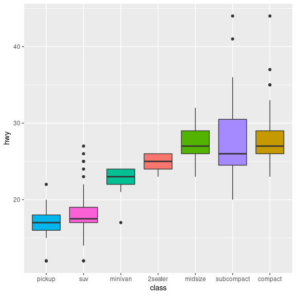

knitr::kable(
mtcars[1:5, ],
caption = "A knitr kable."
)3 Quarto and Markdown
3.1 Introduction
Quarto는 데이터 과학에서 사용되는 코드와 리포트를 결합할 수 있는 통합 문서 시스템입니다. 마이크로소프트 워드나 한글과 같은 워드 프로세서에서 프로그래밍 코드와 데이터 분석을 수행할 수 있는 것처럼, Quarto를 사용하면 텍스트 기반의 마크다운 문법으로 문서를 작성하고 다양한 형식의 출력물로 변환할 수 있습니다. 이러한 출력물에는 HTML, PDF, Word 문서, 슬라이드 쇼, 책, 웹사이트 등이 포함됩니다.
Quarto에 대한 더 자세한 정보는 Quarto 공식 웹사이트에서 확인할 수 있습니다. 해당 웹사이트에는 Quarto 소개 동영상과 Quarto 공식 사이트 메뉴얼이 있으며, Quarto를 사용할 때 참고할 수 있는 cheatsheet도 제공됩니다.
3.2 Quarto의 기본 작동 원리
Quarto는 plain text 기반으로 작성되며 .qmd 라는 확장자를 갖는 파일로 저장됩니다. 다음과 같은 텍스트 파일이 Quarto 파일의 전형적인 예입니다.

Quarto 문서에는 주로 세 가지 유형의 컨텐츠가 포함됩니다. 첫째, YAML 헤더는 문서의 메타데이터를 정의하며, JSON처럼 데이터를 저장하는 데 사용됩니다. 둘째, 코드 청크는 백틱(```)으로 둘러싸여 있으며, R, Python 등의 다양한 언어 코드를 실행할 수 있습니다. 셋째, 일반 텍스트와 마크다운 문법으로 작성된 내용입니다.
---
title: "Lecture"
format:
html:
toc: true
toc-floating: true
toc-depth: 2
number-sections: true
---이러한 Quarto 파일은 render라는 명령어로 원하는 포맷의 문서로 변환할 수 있습니다. 아래 화면은 기본 Quarto 문서 생성시 보여지는 내용이며 html 형식으로 rendering 하기 위해서는 YAML에 html 임을 명시하고 아래와 같이 render함수를 사용하면 됩니다. 또는 Rstudio 코드 입력창 상단의 Render 버튼으로 pdf나 html 문서를 생성할 수 있습니다.
Quarto는 내부적으로 knitr 패키지를 사용하여 R 및 기타 언어의 코드를 실행하여 .md 파일로 변환하고 .md 파일은 pandoc을 통해 HTML, PDF, Word 등 다양한 형식의 문서로 최종 변환됩니다
```{r}
#| eval=F
quarto::quarto_render("test.qmd", output_format = "html")
```
3.3 코드 입력
Quarto에서 코드 청크를 삽입하는 방법은 다음과 같습니다. 단축키 Ctrl + Alt + I (Windows) 또는 Cmd + Option + I (macOS)를 사용할 수 있습니다. 코드 청크의 실행과 표시 여부를 결정하는 옵션을 다음과 같이 사용할 수 있습니다:
include: false- 코드는 실행되지만 결과와 코드를 문서에 표시하지 않습니다.echo: false- 코드는 실행되고 결과가 포함되지만 코드는 숨깁니다.eval: false- 코드를 실행하지 않고 문서에만 표시합니다.message: false,warning: false,error: false- 코드 실행 중 발생하는 메시지, 경고, 에러를 숨깁니다.fig.cap: "..."- 코드로 생성된 그림에 캡션을 추가합니다.
R 코드 청크 예시:
코드는 실행되지만 결과와 코드를 표시하지 않습니다.
```{r}
#| include=FALSE
summary(cars)
```코드는 실행되고 결과가 포함되지만 코드는 숨깁니다.
```{r}
#| echo=FALSE
summary(cars)
```코드를 실행하지 않고 문서에만 표시합니다.
```{r}
#| eval=FALSE
summary(cars)
```Python 코드 청크 예시:
```{python}
#| eval: false
x = "hello, python in Quarto"
print(x.split(' '))
```Quarto 문서에서 코드 청크와 마크다운 문법을 사용하여 내용을 서식화하고 다양한 프로그래밍 언어의 코드를 실행할 수 있습니다. Quarto에 대한 자세한 정보와 사용법은 Quarto 공식 문서에서 확인할 수 있습니다.
Quarto에서는 `r ` 을 사용해서 코드청크가 아닌 곳에 R 코드를 넣을 수 있습니다 (Inline code). 또한 R 언어 외에도 Python, SQL, Bash, Rcpp, Stan, JavaScript, CSS 등의 다양한 프로그래밍 언어에 대해서도 코드청크 기능을 사용할 수 있습니다. 그런데 이러한 언어들이 사용 가능해지기 위해서는 해당 언어들을 실행해주는 엔진이 (인터프리터) 있어야 하며 python의 경우 reticulate 라는 패키지가 이러한 기능을 담당합니다. 이 패키지를 설치할 경우 miniconda라는 가상환경 및 데이터 분석을 위한 오픈소스 패키지가 자동으로 설치됩니다.
```{r}
#| eval: false
library(reticulate)
```위 reticulate 라이브러리를 로딩 후 아래 python 코드청크를 실행시킬 수 있습니다.
```{python}
#| eval: false
x = "hello, python in R"
print(x.split(' '))
```3.4 Markdown 문법
마크다운은 plain text 기반의 마크업 언어로서 마크업 언어는 태그 등을 이용해서 문서의 데이터 구조를 명시하는데 이러한 태그를 사용하는 방법 체계를 마크업 언어라고 합니다. 가장 대표적으로 html 이 있습니다.
<html>
<head>
<title> Hello HTML </title>
</head>
<body>
Hello markup world!
</body>
</html>마크다운도 몇 가지 태그를 이용해서 문서의 구조를 정의하고 있으며 상세한 내용은 Pandoc 마크다운 문서를 참고하시기 바랍니다. 마크다운언어의 철학은 쉽게 읽고 쓸 수 있는 문서입니다. plain text 기반으로 작성되어 쓰기 쉬우며 (아직도 사람들이 메모장 많이 사용하는 이유와 같습니다) 태그가 포함되어 있어도 읽는데 어려움이 없습니다. 위 html 언어와 아래 markdown 파일의 예들을 보시면 그 차이를 어렵지 않게 이해할 수 있습니다.
마크다운에서는 Enter를 한 번 입력해서 줄바꿈이 되지 않습니다. <br> 또는 문장 마지막에 공백을 두 개 입력하면 되겠습니다.
이 분장은 줄바꿈이<br>
됩니다마크다운 테그를 몇 가지 살펴보면 먼저 # 을 붙여서 만드는 header 가 있습니다.
# A level-one header
## A level-two header
### A level-three header
# A level-one header {#l1-1}
## A level-two header {#l2-1}
### A level-three header {#l3-1}
# A level-one header {#l1-2}
## A level-two header {#l2-2}
### A level-three header {#l3-2}인용문구를 나타내는 Block quotations이 있습니다.
This is block quote. This paragraph has two lines
> This is block quote. This paragraph has two linesThis is a block quote.
A block quote within a block quote.
> This is a block quote.
>
> > A block quote within a block quote.Italic
*Italic*Bold
**Bold** [Naver link](https://www.naver.com/)이미지를 직접 삽입하고 가운데 정렬합니다.

<center>
{width="200"}
</center>Lists:
순서형 리스트는 숫자 해더를 사용하고 비순서형 리스트는 dash나 다른 bullet 포인트를 사용합니다.
- 첫 번째
- 두 번째
- 세 번째
- 아이템 1
- 아이템 2
- 아이템 3
- 아이템 3-1
- 아이템 3-2
1. 첫 번째
2. 두 번째
3. 세 번째
- 아이템 1
- 아이템 2
- 아이템 3
- 아이템 3-1
- 아이템 3-2참고로 소스코드 그대로 표현하기 위해서는 #| echo: fanced 를 사용하거나 두 개의 중괄호 (curly braces)를 (fanced echo 도움말) 사용하며 일반 택스트의 경우는 백틱 세 개나 (```) 들여쓰기를 사용합니다.
3.5 스타일
아래와 같이 YAML 해더에 css파일을 삽입하고 해당되는 class 또는 id에 해당하는 내용에 스타일을 적용할 수 있습니다.
.header1 {
color: red;
}위와 같이 style.css 파일 작성 후 quarto파일에서 다음과 같이 사용
---
title: "test"
format:
html:
css: styles.css
---
```{r}
#| classes: header
2 + 2
```3.6 테이블
kable 함수를 이용하여 Quarto 문서에 포함되는 표를 원하는 방향으로 작성할 수 있습니다. mtcars는 데이터프레임 형식의 데이터입니다.
3.7 YAML 헤더
Quarto 파일에서 YAML의 가장 중요한 기능은 output 포멧을 지정하는 것이며 title, author, date, 등을 설정할수도 있습니다.
---
title: "R Programming"
subtitle: "Using Quarto"
format:
html:
css: style.css
includes:
in_header: header.html
after_body: footer.html
toc: true
toc_float: true
number_sections: true
mainfont: NanumGothic
---3.8 Output format
Quarto의 output format 설정은 사용자가 만드는 문서의 종류와 필요에 맞게 유연하게 조정할 수 있으며, 이를 통해 다양한 형식의 고품질 문서를 생성할 수 있습니다. Quarto 문서에 대한 보다 자세한 정보는 Quarto 공식 문서에서 확인할 수 있습니다.
3.9 연습문제
3.9.1 연습문제 1: 기본 HTML 문서 생성
Quarto를 사용하여 간단한 HTML 문서를 생성합니다. 이 문서에는 자기 소개, 몇 개의 섹션, 그리고 R 코드 청크가 포함되어야 합니다.
새 Quarto 문서 생성
문서의 제목을 “My Quarto”로 설정
YAML 헤더에
format: html추가마크다운 언어로 자기소개 섹션과 데이터 분석 섹션 추가
“데이터 분석” 섹션에
mtcars데이터셋의 요약 통계를 보여주는 코드 청크를 포함summary(mtcars)
3.9.2 연습문제 2: 슬라이드 쇼 생성
Quarto를 사용하여 간단한 슬라이드 쇼를 생성합니다. 이 슬라이드 쇼에는 여러 개의 슬라이드와 최소 하나의 인터랙티브한 R 코드 청크가 포함되어야 합니다.
새 Quarto 문서를 생성하고 파일 이름을 “슬라이드 쇼 연습”으로 설정
YAML 헤더에
format: revealjs추가첫 번째 슬라이드에는 간단한 소개 및 슬라이드 쇼의 주제 작성
두 번째 슬라이드에는
ggplot2사용한mtcars데이터셋의mpgvs.cyl그래프 표시library(ggplot2) ggplot(mtcars, aes(x=cyl, y=mpg)) + geom_point()세 번째 슬라이드에는 결론 및 요약 포함

이 저작물은 크리에이티브 커먼즈 저작자표시-비영리-변경금지 4.0 국제 라이선스에 따라 이용할 수 있습니다.